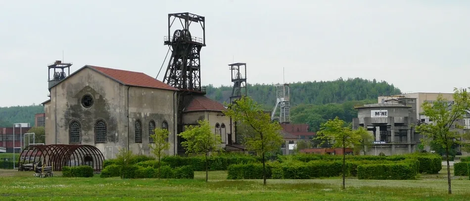
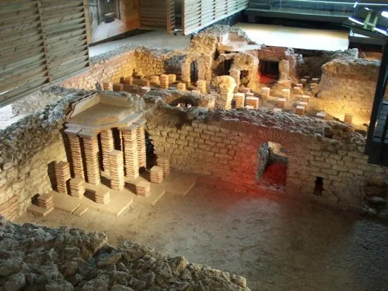
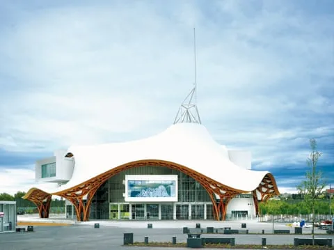
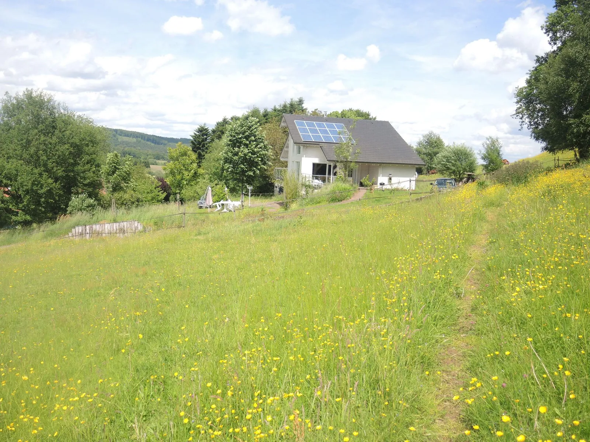

Deux gîtes au calme, entre prairie et forêt
Sur la colline qui domine Varsberg, au lieu-dit Vogelsgesang, « le chant des oiseaux ». Deux hectares de prairies en lisière de forêt, des sentiers qui partent du jardin, une terrasse pour chaque gîte.
Un lieu-dit qui porte bien son nom
Nos deux gîtes sont intégrés en partie basse d'une maison spacieuse, au cœur d'un vaste domaine de deux hectares verdoyants en lisière de forêt, dans un lieu d'exception dit « Vogelsgesang », le chant des oiseaux.
Typique des paysages lorrains, l'environnement se compose d'une nature luxuriante offrant un panorama de toute beauté, dans un contexte empreint de calme et de sérénité.
Deux maisons jumelles, même vue
Mêmes prestations de part et d'autre. Réservez l'un des deux, ou les deux pour une tribu.


Réservez en direct
Sans commission, avec une réponse sous 24 h. Draps fournis, lits faits à l'arrivée, ménage de fin de séjour offert.
À pied depuis le jardin, ou à une heure de route
Chemins de randonnée sans traverser de route, lac et base nautique à 3 km, Metz, la Sarre et le Luxembourg à portée de journée.
3 km
12 km

15 km
30 km

40 km

47 km
Ce qu'en disent nos hôtes
Plus de cent avis sur les plateformes de réservation, et une moyenne qui ne descend pas.
Superhôte Airbnb · hôtes depuis 2011 · nous répondons dans l'heure
★★★★★Hôte très accueillant et séjour très agréable. Gîte très calme, bien équipé, très bonne literie, cadre forestier et nombreux sentiers.
Nicolas · Gîtes de France · 2025-08
★★★★★Impeccable. Excellent rapport qualité-prix, logement conforme à la description — et merci pour la bouteille de vin de Moselle.
Kevin · Gîtes de France · 2025-02
★★★★☆Gîtes au calme, propriétaires sympas, confortable.
Jean · Gîtes de France · 2026-08
★★★★★Eine sehr empfehlenswerte, saubere Ferienwohnung in direkter Nähe schöner Wanderwege.
Dieter M. · Abritel · 2018-10
★★★★☆Beautiful views from the terrace. Perfect spot for a relaxing getaway.
Abritel · Abritel · 2023-11
★★★★★Adembenemende uitzichten rondom!
Abritel · Abritel · 2026-02

Agnès et Marc vous accueillent
Labellisés Gîtes de France (3 épis) depuis 2016, Clévacances et Tourisme & Handicap. Nous parlons français, anglais et allemand.